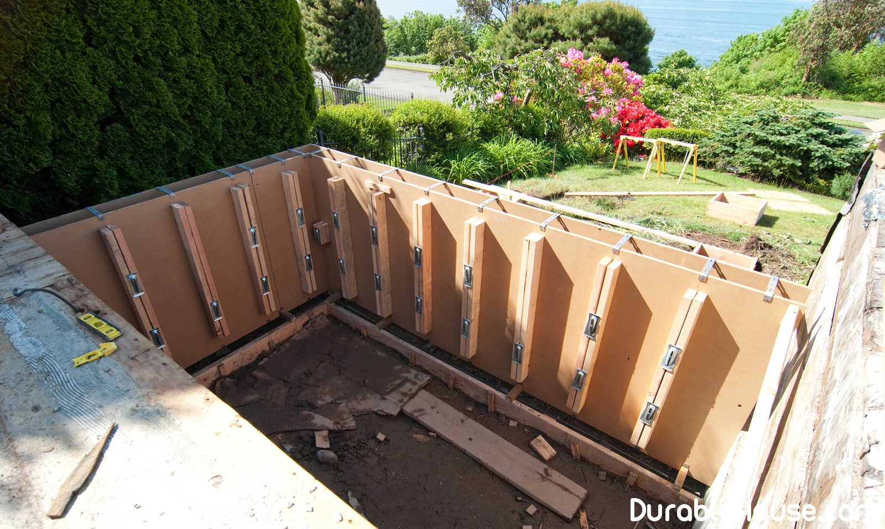

Foundation formwork
Often, instead of specially designed for Monolithic works of lubricants used waste oil and other improvised substances or at all nothing. This reduces the service life of the formwork, and the concrete surface itself can not please Smoothness or necessary adhesion. Such "saving" is the reason for the subsequent financial Costs both for the acquisition of new formwork, and for finishing the concrete surface.
There are many manufacturers on the Belarusian market Lubricants for formwork: you can choose both domestic concrete separating agents, and Produced in the West, in Russia and Ukraine. Often the main criterion of choice is the price, But in the first place, it is necessary to take into account other factors:
- Conformity of lubrication of the treatment surface;
- the dependence of lubricant consumption on the formwork's absorbency
- use of appropriate tools and equipment for applying a concrete separator Material;
- the inadmissibility of appearing on the surface of the casing strips that need to be removed, etc.
Also, such selection criteria as:
- Ecological compatibility (ideal lubrication does not cause harm to health, the environment and does not require Special conditions for disposal);
- cost-effective (does not require a post at the construction site when cooking, Additional energy and labor costs in production);
- the minimum application rate (usually within 30-40 g / m? Formwork)
- wide range of applications (for all kinds of formwork)
- the ability to withstand temperature fluctuations (the ability to use in any Weather conditions, incl. And negative temperatures);
- easy to use (easy to apply with a sprayer, roller, brush, not Requires additional conditions when applied);
- good interaction with the concrete product (absence of stains on the surface, A qualitative smooth surface is provided);
- Good anticorrosive properties (no harmful effect on formwork)
Если в прежние времена большой популярностью среди потребителей косметических средств для опалубки пользовалась смазка Addinol, то экономические трудности, наступившие в результате нагрянувшего кризиса, заставили покупателей и продавцов смазок по-иному взглянуть на проблему применения средств для опалубки. Смазки, которые производятся, например, в России, значительно дешевле аналогичной косметики, выпускаемой в Германии или Италии.
Meanwhile, the leading Manufacturers of shuttering systems recommend to use their own lubricants. Branded concrete separating agents for formwork are, for example, from German companies PERI, PASCHAL, the Italian FARESIN. But this cosmetics because of the high cost is not always Is in demand on the Belarusian market, therefore it is present in relatively small volumes.
Undoubtedly, an even, high-quality surface of concrete It is possible to provide only with the use of shuttering panels, which were followed by proper care. For example, PERI recommends the use as concrete separating liquids PERI Clean and PERI BIO Clean. In this case, the plywood sheets will be qualitatively prepared for Following use. When using other concrete separating agents, Make sure that they meet the necessary data requirements greases.
PERI Clean and BIO Clean are liquid chemically acting Concrete separating agents for all forms of formwork and construction tools made On the basis of mineral oil. They have a water hazard class WGK 1. Among the obvious Advantages of these concrete separating agents, it should be noted that creeping properties Oils renew the tarred surfaces of the formwork, the carving becomes easily movable. Grease Protects wooden parts from decay, and equipment and machinery - from rust. Standard The consumption of these lubricants - 1 liter at 50-90 m? Formwork. In addition, PERI BIO Clean is Environmentally friendly concrete separating agent.
Another brand lubricant, which was mentioned above, is Addinol. Forming oils Addinol F5, F8 Spezial, F10, XT15 are used in the manufacture Concrete products. F68, F150, F220 serve for the manufacture of products from light cellular (Porous) concrete: foam concrete and aerated concrete. These concrete separating agents represent A special refined mineral oils of different viscosities that contain additives, They possess the properties of active separation and suppression of the formation of corrosion. Application Oil on the surface of the formwork promotes the formation of a separation layer that Prevents a direct connection between the formwork and the finished product, and also makes it possible Light, fast and clean formwork.
In addition, molding oils can be used for wooden formwork From penetrating water and for a time protect from corrosion steel formwork. All molding oils Are biodegradable. This ensures the safe application of these oils without causing Harm to human health and the environment as a whole.
Emulsions and molding oils: what's the difference?
Many domestic, Russian and Ukrainian producers As a lubricant for formwork, emulsion based concrete-emitting agents are proposed. They Actively developed and used for the so-called "absorbent" formwork - Wooden or composed of fibrous materials.
Currently, the market also offers molds from Metal or polymers that have a smooth and smooth surface. When applied Emulsions on these surfaces are formed by staining.
Among the shortcomings of the emulsion, it should be noted the need for it Preparation and maintaining the exact mixing ratio, which in practice is An elusive goal. On the site where concreting takes place, should be used as At least two apparatus for mixing the emulsion, and there is also a need for one or two services Workers who must monitor the operation of equipment.
In addition, the emulsion requires rapid application, otherwise it Is settled and the process of separation into oil and water occurs, and at low temperatures it Besides it freezes. Uneven coating emulsion leads to the fact that on the surface Concrete is formed by oil stains.
If a universal molding oil is used for Formwork is provided with a clean and smooth concrete surface, no need to use Emulsifiers, mixing machines and additional maintenance personnel, as well as To put into the budget of the project energy inputs for the operation of these devices.
Application of a molding oil by means of an atomizer Provides a cost effective lubricant for formwork. For example, in the oil of Addinol it is equal to Approximately 20 g / m? (For comparison, if you use a roller, the lubricant consumption will be more than 150 g / m?). If you arm the operator with an atomizer, then there is high productivity in Work, because The builder can process large amounts of grease in a short time.
The advantage of high-quality molding oils lies in the fact, That when leaving traces on a concrete surface, oil stains do not require treatment Solvent - for about 3 weeks, these oils decompose without causing harm Environment and man.
But it is not only these obvious advantages in the work that make Attention to the concrete separating means of the last generation. Thus, some Belarusian Manufacturers do not recommend the use of lubricants like emulsol, because such Cosmetics can destroy the top film of moisture-proof plywood.
The question of quality lubrication is also important because it is Allows significantly increase the turnover of formwork - in some cases up to 1.5 times, And also extend the life of the plywood deck, the cost of which is up to one-third of the cost The entire formwork system.
What does the market offer?
At the present time, when cost savings do not allow Expend on the costly lubrication for formwork, you can resort to quality lubrication, Which is issued under the license of Western companies, in particular in Russia. For example, Italian company Faresin, not considering it expedient to import its brand name into Belarus Grease, offers for their own formwork systems to use a concrete separating agent TiraLux-1721. This lubricant is the development of the German company Schomburg-EP Ltd. it A professional product, ready for use and not requiring dilution with water. The composition is not It contains solvents and can therefore be used for any kind of formwork - laminated, Plastic, matrix, steel, used for monolithic works. Heat resistance up to 70 ° C allows this product to be used in the production of prefabricated Reinforced concrete, where the process of pre-heating of steel formwork takes place.
Among high-quality, expensive lubricants, the fastidious customer Has the opportunity to choose as already mentioned Addinol and PERI, and Aspoform, Ortolan, Bechem, Relax, Blankol. True, it is not a fact that these lubricants budget organizations will immediately want To acquire for financial reasons, besides in some cases they will not be able to do it quickly Do for the simple reason that some suppliers will be able to supply them only to order Approximately in a week. Also on the Belarusian market are widely represented oils for Formwork of Scandinavian concern Statoil: Formlen, Formway and Formway Bio.